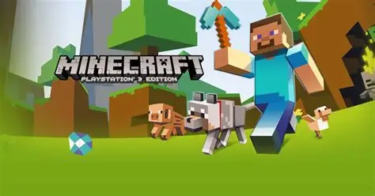
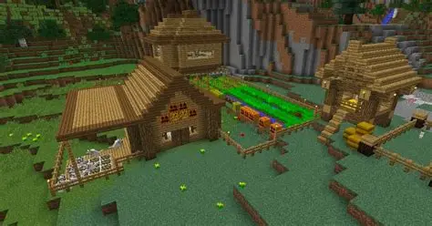

Minecraft é um jogo de "sandbox" onde o jogador é colocado em um mundo infinito gerado proceduralmente, composto inteiramente por blocos. A história não é linear; você começa sem nada e precisa coletar recursos como madeira e pedra para sobreviver à noite, quando criaturas perigosas aparecem. O objetivo principal, para muitos, é explorar dimensões como o Nether e o End para derrotar o Ender Dragon, mas a verdadeira essência está na liberdade total de criação.

Dicas do game
A primeira regra de ouro no Minecraft é: nunca cave diretamente para baixo, pois você pode cair em uma caverna profunda ou em um lago de lava mortal. Garanta sempre que tenha tochas e comida suficiente antes de iniciar uma exploração em minas, pois a fome reduz sua regeneração de vida. Construir um abrigo seguro antes do pôr do sol é crucial para evitar o confronto com Creepers e esqueletos logo no início da sua jornada.
Aprender as receitas de "crafting" é essencial; priorize fazer uma picareta de ferro o quanto antes para conseguir minerar diamantes, que são o material base para os melhores equipamentos do jogo. No combate, use o escudo para se proteger de flechas e explosões, e lembre-se de que cada arma tem um tempo de recarga para causar o dano máximo. Encantar suas ferramentas em uma mesa de encantamentos também dará vantagens absurdas, como durabilidade infinita e maior eficiência.
Se você estiver perdido, aprenda a usar as coordenadas (F3 no PC) para marcar a localização da sua base e de pontos de interesse. Criar vilas artificiais ou proteger vilarejos existentes é uma ótima estratégia para conseguir itens raros através de trocas com os aldeões. Por fim, sempre carregue um balde de água; ele pode salvar sua vida ao apagar fogo ou amortecer uma queda de grandes alturas se for colocado no chão no momento exato.

Novidades desta versão do game
As versões recentes do Minecraft trouxeram atualizações massivas para os biomas de cavernas e montanhas, introduzindo novos tipos de geração de terreno que tornam a exploração muito mais vertical e épica. Novas criaturas como o Warden foram adicionadas nas profundezas escuras, trazendo um elemento de terror e furtividade que desafia até os jogadores mais veteranos e equipados.
O sistema de arqueologia também é uma novidade empolgante, permitindo que os jogadores usem escovas em ruínas para encontrar fragmentos de potes e ovos de Sniffer, uma criatura antiga que ajuda a encontrar sementes raras. Além disso, novos blocos de construção como o bambu e a madeira de cerejeira (Cherry Blossom) deram aos construtores uma paleta de cores totalmente nova e delicada para suas mansões.
A otimização do jogo continua sendo um foco, com melhorias na renderização que permitem ver distâncias maiores sem perder desempenho. O cross-play entre diferentes plataformas (consoles, PC e celular) está mais estável do que nunca, permitindo que comunidades inteiras se reúnam em Realms ou servidores privados com facilidade para construir projetos monumentais que antes eram impossíveis de coordenar.